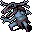

氷塔の崩落 Seracfall
英語版 CrawlWiki の記事「Seracfall」(0.30 向け、2026-06-16 版)の翻訳です。原文の著者は編集履歴をご覧ください。
この記事は 0.30 の時点の内容で、最新の 0.34 とは違うところがあるかもしれません。
| 近くにいる幻像を激しく崩して大きな氷の塊にし、着弾とともに炸裂させる。強い衝撃と鋭い刃のため、この氷は冷気への耐性を持つモンスターにもいくらか効果がある。 |
氷塔の崩落はモンスター専用の呪文で、幻像を壊して、対象に 3x3 の爆発を放つ。凍てつく吹雪と同じく、ダメージの 50% は耐性で防げない冷気のダメージで、決して外れない。この呪文を唱えるには術者の視界に幻像がいなければならず、その幻像は術者の味方でなければならない(つまり、あなたの幻像をあなたに向けて使うことはできない)。
氷塔の崩落を唱える敵は次のとおり。
- L
 ジョセフィーナ(ダメージ 3d37)
ジョセフィーナ(ダメージ 3d37) - R

ウェンディゴ(ダメージ 3d28)